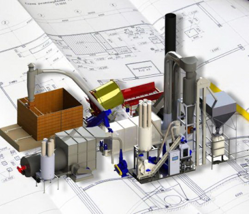
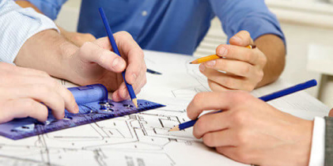
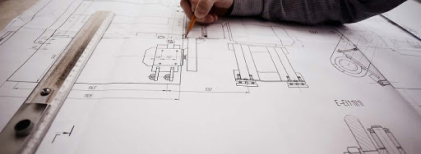
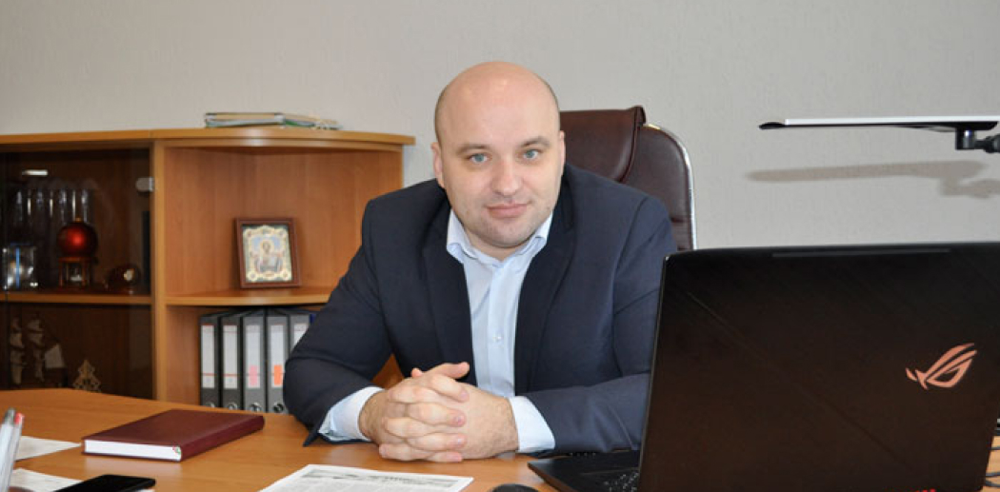

Направления деятельности
Направления деятельности
Проектно-конструкторские работы
Разработка проектно-сметной документации на строительство, реконструкцию (модернизацию), реставрацию и ремонт объектов:
- жилищно-гражданского строительства – жилые многоквартирные дома, объекты здравоохранения, образования культуры и искусства, торговли и общественного питания, бытового обслуживания, объекты административного управления и офисные помещения, объекты банковской системы и прочее;
- промышленного строительства -здания и сооружения производственного назначени;
- инженерного обеспечения – магистрали и сети газоснабжения, теплоснабжения, водоотведения, электроснабжения, тепловые пункты, трансформаторные подстанции;
- благоустройства территорий – благоустройство территории жилой застройки (новое, реконструкция, капитальный ремонт), гражданских и промышленных объектов;
- полное обустройство существующих городских и поселковых улиц и площадей;
- современные детские и спортивные площадки.
Направления деятельности
Градостроительная деятельность
Изыскательские работы:
- топографо-геодезические работы – топографическая съемка (м 1:500, 1:1000), вынос в натуру объектов и трасс линейных сооружений;
- общее обследование технического состояния зданий, сооружений и выдачей заключений по результатам обследования (с 2010 г – детальное обследование технического состояния зданий сооружений, отдельных конструктивных элементов).
Направления деятельности
Деятельность в области промышленной безопасности
Выдача разрешений:
- выдача разрешений на проведение земляных работ.
О компании
Важность сохранения сложившихся для предприятия традиций трудно переоценить. Они для коллектива являются своего рода движущей и укрепляющей силой, позволяющей в различных ситуациях, используя накопленный опыт производственных отношений, находить наиболее рациональные решения. Производственная политика по своей сути является отражением сложившихся традиций. А значит, если руководители предприятий, ведущие специалисты выросли в среде этих сложившихся устоев и моральных ценностей, то вектор направления такой производственной политики будет всегда устойчив, а в коллективе будет сохраняться баланс интересов.
Примером такого успешного предприятия с доверительными отношениями в коллективе является КУП «Пинская проектно-конструкторская мастерская «МАРС». Директор проектно-конструкторской организации Александр Николаевич Барановский, относится к той категории руководителей, которые пришли в коллектив сразу после студенческой скамьи, прошли серьезную школу накопления практического опыта по выбранной профессии и работы с людьми и, в конечном итоге, состоялись как личности, способные руководить коллективом.
«Здоровый и устойчивый морально-психологический климат проектно-конструкторской мастерской, – отметил Александр Николаевич в самом начале нашей беседы, – был заложен еще первым руководителем унитарного предприятия, архитектором Михаилом Ивановичем Михальчуком. Он возглавлял проектную организацию с 1992 по 2005 год. Под его руководством, благодаря упорной и самоотверженной работе коллектива предприятия, «МАРС» постепенно из небольшой мастерской стал одной из ведущих проектных организаций Пинского региона.
Достойным продолжателем развития предприятия, его материальной базы и творческого потенциала, а также дальнейшей гармонизации отношений внутри коллектива стал грамотный инженер и опытный руководитель Аркадий Юрьевич Грушко. Нынешняя структура предприятия была сформирована именно в годы его работы в качестве директора «МАРСа». Проектная организация стала практически универсальной, и в настоящее время может выполнять проекты любой сложности, имея в творческом арсенале рабочие группы специалистов по проектированию всех элементов, начиная от строительной части и архитектуры, заканчивая инженерными сетями и различными коммуникациями».
В середине прошлого десятилетия, когда Аркадий Юрьевич возглавил проектно-конструкторскую организацию, практически все промышленные предприятия испытывали большой дефицит в инженерных кадрах. Период, когда в моде у выпускников средних школ были профессии экономистов и юристов, давал о себе знать. В равной степени эта проблема касалась и «МАРСа». Проектировщиков-конструкторов с опытом работы найти было трудно, и Аркадий Юрьевич решил сделать ставку на молодежь, на выпускников технических ВУЗов. Будущий директор «МАРСа» Александр Николаевич Барановский, который в 2003 году после окончания Брестского государственного технического университета был направлен по распределению в «МАРС», послужил тому замечательным примером. Он быстро освоился в коллективе и прочно занял свою нишу в структуре предприятия как грамотный, и перспективный специалист с большим творческим потенциалом. Именно тогда начала проводиться активная работа по повышению квалификации молодых работников и продвижению их на руководящие должности.
«В структуре нашего предприятия, – пояснил Александр Николаевич, – имеется восемь групп, занятых непосредственно проектно-конструкторской работой. Все они специализированные, и каждая из них при подготовке проекта занята определенным направлением. Это группы строительного проектирования, архитектурного проектирования, выдачи разрешительной документации, инженерных изысканий, электротехнического проектирования, проектирования систем отопления и вентиляции, проектирования систем водоснабжения, водоотведения и газоснабжения и восьмая – сметная группа. Продолжая кадровую политику омолаживания коллектива, мы стараемся выдвигать на руководящие должности молодых, но уже зарекомендовавших себя специалистов. К таким руководителям в первую очередь следует отнести главного инженера предприятия Максима Николаевича Яромича. Это талантливый инженер с большим творческим потенциалом и умелый руководитель с современными взглядами на менеджмент. Нельзя не отметить эффективную работу на должности главного инженера проекта Максима Степановича Прокоповича. Под его непосредственным руководством был в полном объеме разработан проект торгового центра промышленной группы товаров по ул. Брестской, 140 А в г. Пинске, который не только исключительно функционален, но и стал в городе своего рода достопримечательностью современного архитектурного стиля. Благодаря тому, что заказчик проекта остался доволен нашей работой, он не только выразил коллективу предприятия искреннюю благодарность через позитивный отзыв и Почетную грамоту, но продолжил работать с нашей проектной организацией. Сейчас Максим Степанович работает с тем же заказчиком над новым проектом «Строительство магазина непродовольственной группы товаров по ул. Кирова, 91А в г. Барановичи».
Успешно и результативно справляются со своими обязанностями руководителей групп Александр Петрович Антончук и Андрей Владимирович Кругляк. Они, соответственно, возглавляют группы строительного и архитектурного проектирования. Нельзя обойти вниманием нашего молодого, но активного и старательного специалиста, инженера Алесю Гришко. На ее примере можно сделать вывод, что Белорусская государственная селскохозяйственная академи готовит замечательные инженерные кадры».
Что касается непосредственно деятельности проектно-конструкторской организации «МАРС», следует отметить, что если раньше ареал проектных разработок ограничивался Пинском, то сейчас предприятие участвует в тендерах на проектирование объектов строительства и в других городах области. Активно работает «МАРС» по выполнению заказов, связанных с Государственной программой «Безопасный лифт», которая предусматривает к 2020 году замену по стране 11 тысяч лифтов.
Одними из наиболее значимых проектов, в которых непосредственно участвовал «МАРС», являются реконструкция ул. Ленина и реконструкция ул. Брестская. Реализация этих проектов кардинально преобразила Пинск. Улицы стали широкими, изменился их ландшафтный дизайн, были проведены работы по обновлению подземных коммуникаций. Сейчас в тесном сотрудничестве со строительными организациями ведутся проектные работы по застройке новых жилых микрорайонов.
«Чтобы хорошо жить, надо и хорошо работать, – подчеркнул Александр Николаевич, когда была затронута тема портфеля заказов. – Наше проектно-конструкторское предприятие старается активно участвовать во многих проводимых тендерах. «МАРС» – организация хозрасчетная, поэтому коллектив прекрасно понимает, что зарплата напрямую зависит от объема выполненных работ. При этом каждый проект должен быть выполнен с высоким качеством, иначе будет снижен, а то и потерян авторитет организации, завоеванный десятилетиями. И тут следует опять возвратиться к вопросу взаимодействия специалистов внутри коллектива, к вопросу так сказать, внутренних производственных отношений.
«МАРС», по большому счету, – это большая семья из более шестидесяти инженерно-технических работников. За многие годы в коллективе сложились исключительно доверительные отношения и добрая традиция взаимопомощи. Психологический микроклимат в коллективе позволяет специалистам быть раскрепощенными и не стесняться задавать вопросы более опытным работникам. В свою очередь специалисты с более высокой квалификацией и опытом работы никогда не отказывают в консультации своим коллегам, понимая, что делается общее дело. Следует отметить еще одну характерную черту коллектива нашей проектно-конструкторской организации, которая заключается в готовности сотрудников брать на себя ответственность за порученное дело. А такое качество дорогого стоит».
Контакты
КУП "Пинская проектно-конструкторская мастерская "Марс"
Адрес
225710, Брестская обл.,
г. Пинск, ул. Кирова, 22
Телефоны
(0165) 32-33-99
приемная
(0165) 32-41-34
группы инженерного проектирования
(0165) 32-39-81
выдача разрешительной документации
pkm-mars@yandex.by
Директор
Барановский Александр Николаевич
(0165) 62 61 05
pkm-mars@yandex.ru